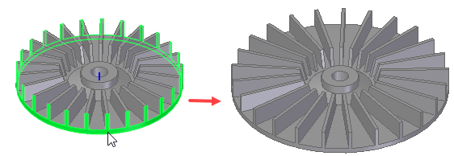
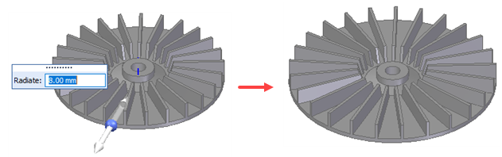
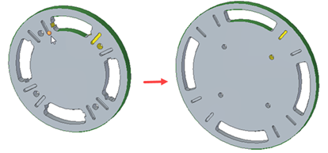
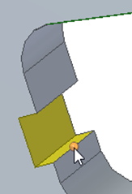
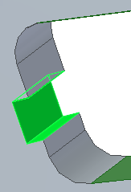
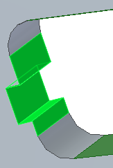
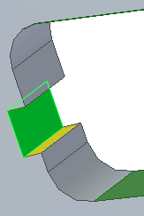
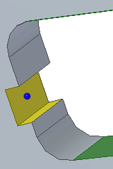

Radiate command
Use the Radiate command  in the sync environment to edit the radius of selected coaxial, cylindrical, conical, toroidal, and spherical faces.
in the sync environment to edit the radius of selected coaxial, cylindrical, conical, toroidal, and spherical faces.

Editing the radius of faces
When selecting faces to edit, you can:
-
Select individual faces.

-
Use the Include All Coaxial Faces option to select a face and all faces coaxial to the selected face.

After selecting the faces, you can either enter a value in the Dynamic Value box or drag the handle to edit the radius.

Moving satellite faces
The Radiate command supports satellite faces, which are a group of faces that move toward the radiate axis while other faces are being radiated.
Move directions are suggested. To accept or define the move direction:
-
Click the handle to accept the suggested direction.
-
Drag the handle to define a direction.
-
Select a keypoint to define the direction.
When defining the groups of faces, patterns are automatically found and moved properly. Because of Design Intent, if you select one feature, such as a slot, any corresponding patterns move together.

Editing face groups
After creating a group of moving faces, you can add faces to or remove faces from the group.
To do this:
-
Click the spherical handle.

The faces in the group are highlighted.

-
Do either of the following:
-
To add faces to the group, click the faces .

-
To remove faces from the group, press Ctrl and click faces.

-
-
Right-click to accept the changes.

How do I
Construct a revolved extrusion: base featureConstruct a revolved extrusion or cutout: subsequent features
Edit the radius of a face
Move a group of faces radially along a direction
Learn more
Constructing revolved synchronous featuresConstructing revolved features using the Select tool
Look up more details
Revolve commandRevolve command bar
Revolved Protrusion command bar
Radiate command bar